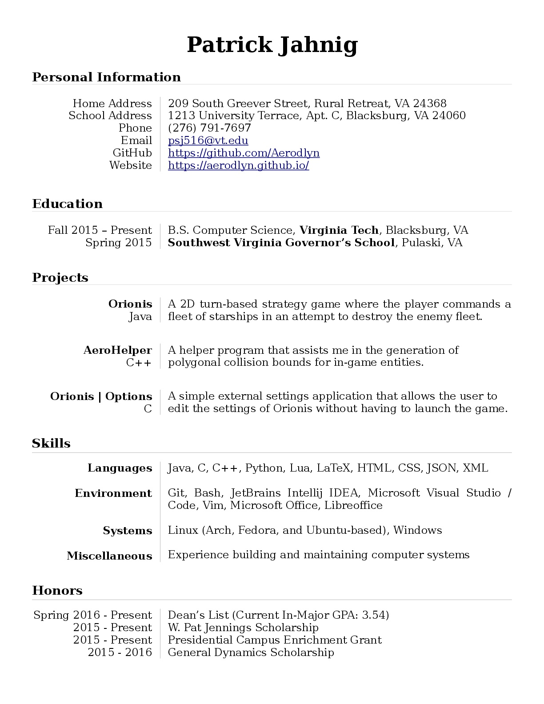

Welcome to my portfolio site! Here I have some information about my current and past projects, located here and on their own
individual pages.
Here is my current resume, as of May 2017:

Click the image to download or right-click to view.
If you would like to view my coursework, please email me and let me know. I will then add you to the private repositories (currently
on GitLab) or I will email you each course as an archive.
Below is a list of my projects:
-
AeroHelper is a simple helper program that I created to assist my development
of Orionis. The program is used to create polygonal shapes that are based on the appearance of a sprite. Orionis originally
needed an array of 2D points for each ship to calculate whether or not a projectile was colliding with the ship. Before the
creation of AeroHelper, these points had to manually placed by calculating their locations using an image manipulator. That
process was incredibly tedious even for small ships.
Note: While the current version of Orionis doesn't make use of AeroHelper's capabilities, AeroHelper remains useful for future
projects that would need manual definitions polygonal collision bounds.
-
Orionis is a 2D turn-based strategy game where the player pits their fleet against
another. Over the course of the battle the player will need to decide on each action their ships will make. Do you want your
ship to go for the obvious action and attack an enemy ship? Or you do want to be more strategic and take your time, using your
ships to defend each other and call in reinforcements. Be aware however, the ultimate win condition is to destroy the enemy
flagship, the centerpiece of a fleet. But, the more and stronger ships a fleet has, the harder it will be to destroy the
flagship.
-
Orionis | Launcher is a simple wrapper application that makes it easy for the user to
launch the game as well as the settings application, all from one place.
-
Orionis | Options is a simple external application that can used to modify the settings
that Orionis uses without having to first open Orionis.